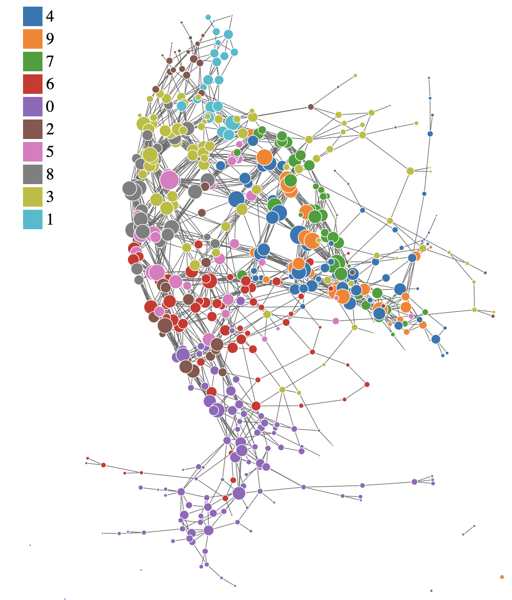
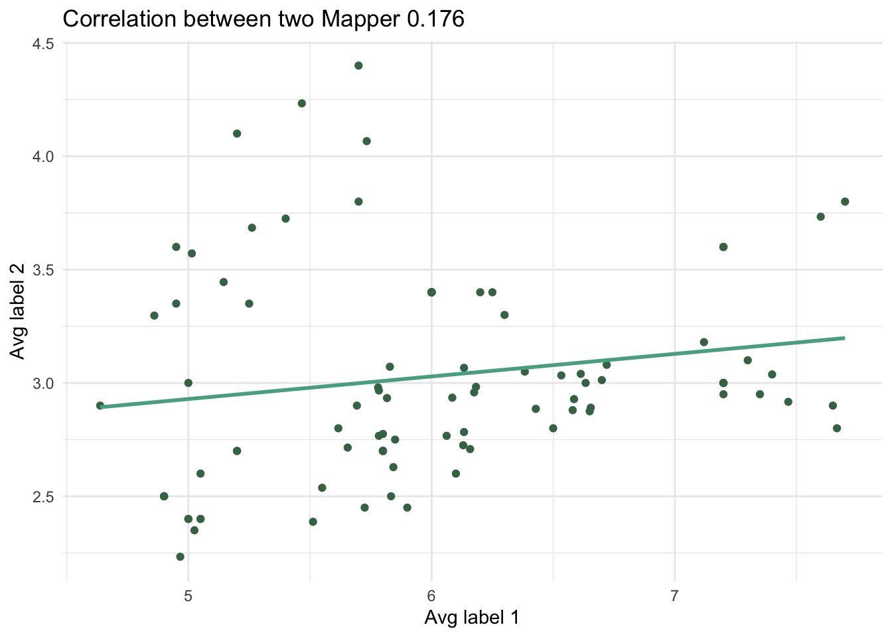

Performance
2025-10-29
1 Mapper

1.2 Run Mapper Algorithm
There are several clustering methods available, including DBSCAN, hierarchical clustering, k-means, and PAM. But you need to input all of the params required for the chosen method in method_params.
time_taken <- system.time({
Mapper <- MapperAlgo(
original_data = data[,1:4],
filter_values = data[,1:4],
# filter_values = circle_data[,2:3],
percent_overlap = 30,
methods = "dbscan",
method_params = list(eps = 1, minPts = 1),
# methods = "hierarchical",
# method_params = list(num_bins_when_clustering = 10, method = 'ward.D2'),
# methods = "kmeans",
# method_params = list(max_kmeans_clusters = 2),
# methods = "pam",
# method_params = list(num_clusters = 2),
cover_type = 'stride',
# intervals = 4,
interval_width = 1,
num_cores = 12
)
})
time_taken## user system elapsed
## 0.133 0.089 1.2511.3 Plots
There are built-in plotting functions to visualize the Mapper graph. You can choose between “ggraph” and “forceNetwork” types. Additionally, you can choose to average feature values over nodes or use conditional probability embeddings.
1.4 Correlation between Mapper graph and features
Sometimes it is useful to find out whether the Mapper graph structure correlates with certain features in the data. For example, if Sepal.Length densities are similar to Sepal.Width densities across the nodes in the Mapper graph.
source('../R/MapperCorrelation.R')
MapperCorrelation(Mapper, original_data = original_data, labels = list(data$Sepal.Length, data$Sepal.Width))## `geom_smooth()` using formula = 'y ~ x'
1.5 Grid Search for optimal cover parameters
If you want to find optimal cover parameters for your data, you can use the GridSearch function. Observing the convergence of certain graph metrics as cover parameters change can help you select appropriate values.
source('../R/GridSearch.R')
cpe_params <- list("PW_group", "Species", "wide", "versicolor")
data$PW_group <- ifelse(data$Sepal.Width > 1.5, "wide", "narrow")
labels <- data%>%select(PW_group, Species)
GridSearch(
filter_values = data[,1:4],
label = labels,
column = "Species",
cover_type = "stride",
width_vec = c(1),
overlap_vec = c(30),
num_cores = 12,
out_dir = "../mapper_grid_outputs",
avg = TRUE,
use_embedding = cpe_params
)